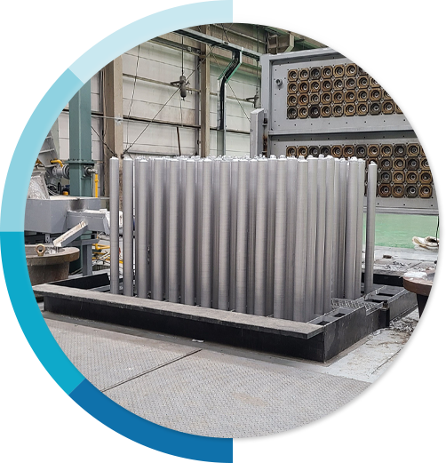
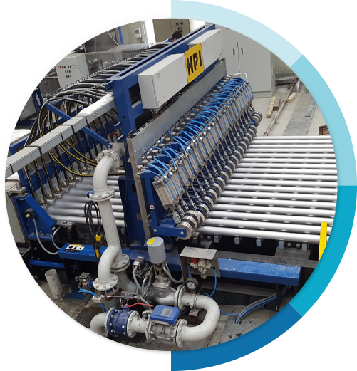

${require('./include/_meta.html')} ${require('./include/_header.html')}
product characteristics

Vertical Continuous
Casting
Continuous
Casting Process

Horizontal
Continuous Casting
line
line
Characteristics
Aluminum small diameter continuous
casting bars have superior properties compared to extruded bars.
Excellent formability with equiaxed grain structure
Prevent grain growth after forging and heat treatment
Easy production of hard workability and high-strength aluminum alloys
Excellent heat treatment due to fine distribution of eutectic composites
Economic efficiency is excellent due to reduced process
${require('./include/_footer.html')}